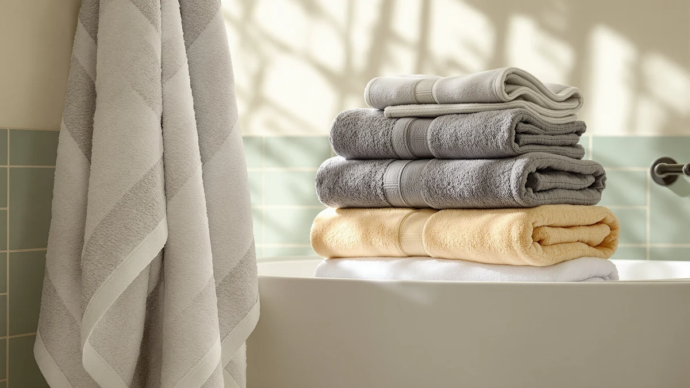

Best Turkish vs Egyptian Cotton Towels (2026) | Best Bath Towels
Prices and picks verified as of August 2026. Independent, reader-supported reviews.


Things to Know Before You Buy
- Turkish cotton towels dry faster and weigh less, which suits small or humid bathrooms.
- Egyptian cotton towels hold more water and feel more plush, closer to a hotel towel.
- GSM (grams per square meter) tells you the weight: 400 to 500 GSM is light and quick-drying, 600 GSM and up is dense and spa-like.
- Both fibers soften with washing, so skip the fabric softener, which coats the loops and cuts absorbency.
- Price overlaps heavily between the two, so the fiber name alone is not a reliable guide to quality.
Choosing between Turkish vs Egyptian cotton towels comes down to how you actually use a towel every morning. Both are long-staple cottons known for their softness, but they behave differently the moment they touch wet skin. Turkish cotton dries fast and feels light. Egyptian cotton soaks up more water and feels plush and heavy. Most shoppers assume one type is simply better than the other, but the right pick depends on your bathroom, your laundry habits, and the feel you want after a shower.
We compared the two fibers across the things that matter once the towel is in daily rotation: absorbency, drying time, weight, durability over dozens of washes, and price per towel. We also looked at how each fiber holds up in a humid bathroom where towels rarely get the chance to fully air out. We are not trying to crown a single winner here. We want to match the fiber to your routine so you know which type belongs on your rack.
Quick Answer
For most bathrooms, Turkish cotton towels win on practicality: they dry on the bar faster, weigh less, and resist that damp, musty smell. Egyptian cotton towels win on indulgence, soaking up more water and feeling thicker against your skin. If you want a quick-drying everyday towel, go Turkish. If you want a plush, hotel-style towel and do not mind longer drying times, go Egyptian.
What is Turkish?
Turkish cotton towels are woven from cotton grown mainly in the Aegean region of Turkey. The fiber is long-staple, meaning each strand runs longer than standard cotton, so the yarn spins smoother and sheds less lint over time. Weavers often use longer, looser loops with a lower twist, which is why a fresh Turkish towel feels light and slightly flat rather than thick and fluffy.
That construction is the whole point. Longer loops with more space between them let air move through the fabric, so the towel releases moisture quickly and dries on the rack in a fraction of the time a dense towel needs. You feel the difference most in a small bathroom with poor ventilation, where a heavy towel can stay damp until your next shower.
Turkish cotton also gets softer the more you wash it. A new towel can feel almost crisp out of the package, then loosens and plumps after three or four cycles. The trade-off is absorbency, since a light Turkish towel holds less water at once than a dense Egyptian one, so you may need an extra pass to dry off fully.
What is Egyptian Cotton Towels?
Egyptian cotton towels are made from cotton grown in the Nile River Valley, where the climate produces some of the longest cotton fibers in the world. Those extra-long staples spin into fine, strong yarn with very few weak points, so the loops can be packed tightly without feeling rough. You end up with a dense, heavy towel that feels plush the moment you pick it up.
That density is what drives the appeal. More cotton per square inch means more surface area to grab water, so an Egyptian cotton towel pulls moisture off your skin in one swipe and holds a lot of it. This is the fiber behind most high-end hotel and spa towels, and it delivers that thick, wrap-yourself-up feel that lighter towels cannot match.
The cost of all that plushness is drying time. A dense, water-hungry towel takes longer to dry on the bar, and in a humid bathroom it can hold onto dampness and develop a musty smell if you are not diligent about airing it out. Egyptian cotton towels also weigh more in the wash, so a full set adds up across laundry loads.
Head-to-Head: Build Quality & Durability
On build, the Turkish vs Egyptian cotton towels question turns on staple length and weave density. Both use long-staple cotton, so both resist pilling and fraying better than cheap short-staple towels. The difference shows up in how the loops are constructed.
Egyptian cotton towels pack more tightly twisted loops into each towel, which gives the fabric more body and a heavier hand. That extra material can mean a longer service life if you launder it gently, since there is simply more fiber to wear through. The denser pile also holds its shape and resists going threadbare in high-traffic spots.
Turkish cotton towels use longer, lower-twist loops, so they feel lighter, but they are far from flimsy. The long fibers keep lint and shedding low, and the open weave takes less abuse from frequent washing and fast drying. Because a Turkish towel dries quickly, it spends less time damp, which slows the mildew and odor that quietly degrade any towel.
Both fibers last for years with cold washes and low-heat drying. Hot water and high heat shorten the life of either one, so your wash temperature matters more than the country on the label.
Head-to-Head: Price & Value
Price is where the Turkish vs Egyptian cotton towels comparison gets blurry. Both fibers span a wide range, and the name on the tag matters less than weight, weave, and brand. In our picks, the Aston & Arden Egyptian set runs $42.99, the White Classic bath sheets sit at $37.99, and a premium Gold CASE LYCIA Turkish towel reaches $69.99, so there is no clean rule that one fiber costs more.
For value, think in price per towel and expected lifespan rather than sticker price. A mid-weight Turkish towel around $10 to $20 each will serve a busy family well and dry fast between uses. A denser Egyptian towel costs a few dollars more per piece for the plusher feel. Both deliver years of use if you wash cold and skip fabric softener, so spend where the feel matters most to you.
Head-to-Head: Use Experience
Day to day, the Turkish vs Egyptian cotton towels gap is easy to feel. Reach for a Turkish towel and you notice how light it is on the bar and how fast it dries between showers. In a shared bathroom where towels hang close together, that quick drying keeps things fresher and cuts the damp smell that builds up by midweek.
An Egyptian cotton towel rewards you the moment you step out of the shower. It is thick, it wraps fully around you, and it soaks up water in one pass instead of two. That plush, heavy feel is the closest you get to a spa at home, and it is the reason many people splurge on a single set for the master bath.
The trade-off lands in your laundry routine. Egyptian towels take longer to dry and weigh down a wash load, so a full set means more time on the line or extra dryer cycles. Turkish towels move through the laundry faster and fold flat, which helps if you have limited storage or wash often. Pick the experience that fits how your household actually lives.
When to Choose Turkish
Choose Turkish cotton towels if speed and freshness rank above pure plushness. They are the better call for small or poorly ventilated bathrooms, where a quick-drying towel avoids the musty smell that haunts dense fabrics. They also suit gym bags, beach trips, and travel, since they fold flat, weigh little, and dry fast after a single use.
Families and frequent washers tend to prefer Turkish towels too. They cycle through the laundry quickly, take up less space in the closet, and get softer with every wash. If you like a lighter, more breathable towel that does not feel like a heavy blanket, this is your fiber. You give up a little absorbency, so keep one on the bar for everyday use and you will rarely miss the extra heft.
When to Choose Egyptian Cotton Towels
Choose Egyptian cotton towels when the after-shower feel matters most and you have a bathroom that breathes. They work best in a master bath with good ventilation or a heated towel rack, where the longer drying time is not a problem. If you want guest towels that feel like a hotel, or a single indulgent set for yourself, this dense fiber delivers that thick, wrap-around comfort.
They also make sense if you dry off in one pass and dislike going back for a second swipe. The high absorbency pulls water off fast, and the weight feels reassuring against your skin. Just commit to airing them out fully and washing on cold, since a damp Egyptian towel left bunched up will smell sooner than a Turkish one. For sheer plushness and a spa feel at home, Egyptian cotton towels are worth the upkeep.
Our Top Picks
These three sets show how the fibers play out in real products. The Turkish pick dries fast and feels light, the value set balances both worlds, and the Egyptian pick delivers the plush, hotel feel.

Editor’s Pick
Gold CASE LYCIA Turkish Beach
A premium Turkish towel that dries fast and feels light, ideal for humid bathrooms and travel.
$69.99
Check Price on Amazon
Best Value
White Classic Luxury Bath Sheets
Big, absorbent cotton bath sheets at a fair price, a safe pick if you cannot decide between the two fibers.
$37.99
Check Price on Amazon
Premium Choice
Aston & Arden Luxury Egyptian
Dense, plush Egyptian cotton with serious absorbency for that wrap-yourself-up, hotel feel.
$42.99
Check Price on AmazonWhich is more absorbent, Turkish or Egyptian cotton?
Egyptian cotton is the more absorbent of the two.
Do Turkish towels dry faster than Egyptian towels?
Yes.
Frequently Asked Questions
Which is more absorbent, Turkish or Egyptian cotton?
Do Turkish towels dry faster than Egyptian towels?
Which type of cotton towel lasts longer?
Are Turkish or Egyptian cotton towels better for sensitive skin?
Is a higher GSM always better for a bath towel?
Final Verdict
The Turkish vs Egyptian cotton towels debate has no single winner, only the right fit for your bathroom. Pick Turkish cotton if you want a light, fast-drying towel for a humid or busy bathroom, and the Gold CASE LYCIA Turkish set is our top choice there. Pick Egyptian cotton if you want a dense, plush, hotel-style towel and have the ventilation to dry it, where the Aston & Arden Luxury Egyptian set leads. If you cannot decide, the White Classic bath sheets split the difference at a fair price.